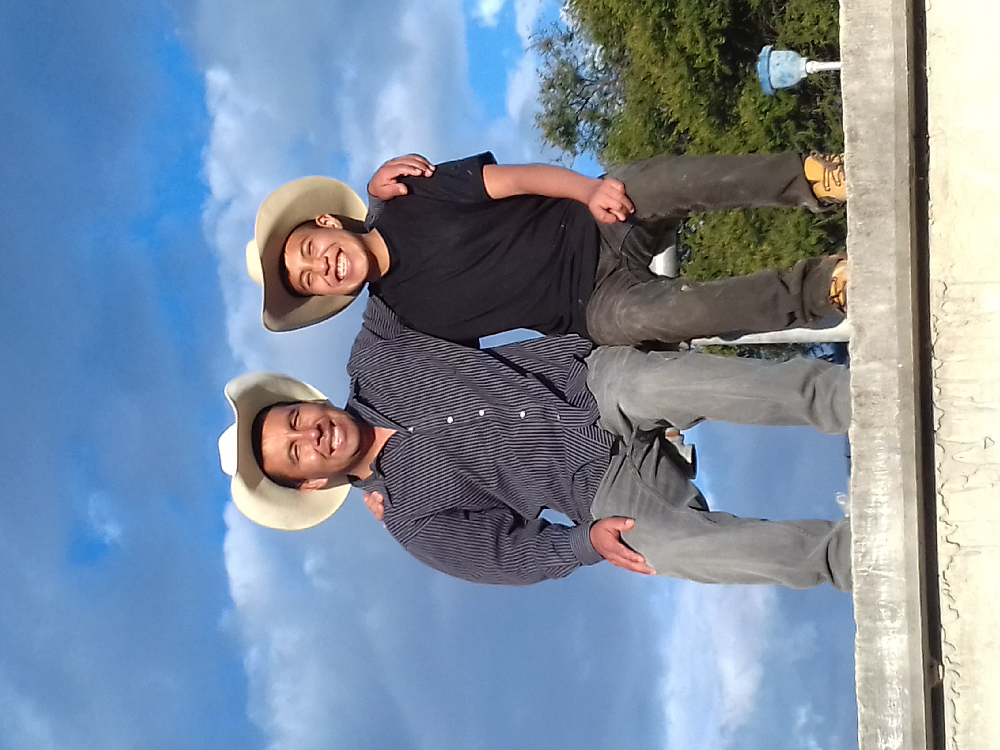

"En total somos 4 contandome a mi, mis papás y mi hermanita.
Mi papá se llama Rigoberto Ojeda Bazan, tiene 43 años y es de un pueblito de Oaxaca llamado Rio Blanco, es con el que mas me llevo, de pequeño lo seguía a todos lados,
cuando sabe que hice algo malo trata de sermonearme de tal forma que vea mis errores sin alzar tanto la voz, es muy trabajador, demasiado diría yo, pero al ser de
provincia es muy conservador en sus ideales y es algo en lo que siempre chocamos.
Mi mamá se llama Carolina Ojeda López, tiene 40 años y viene del mismo pueblo que mi papá, un dato curioso es que ambos ya se conocían allá, pero se hicieron nocios aquí
en México y se casaron tiempo después, nuestro carácter y forma de ser es exactamente la misma, por lo que siempre chocamos mucho por la más mínima cosa, pero siempre
esta tras de mi y me quiere apoyar en mis tareas, pero no me gusta eso jajaja, al igual que mi papá es muy conservadora con sus ideales, aún así me llevo bien con ella
y la quiero mucho.
Mi hermanita se llama Alondra Ojeda Ojeda, tiene 13 años, pero en noviembre cumple sus 14, ella también nació en Xalostoc, todos dicen que nos parecemos mucho, y la
verdad si es cuerto jajaja, es muy inteligente pero ella no es de hacer desmadre, por lo que sus notas siempre han sido altas, en eso siempre me ha ganado :(, antes no me
llevaba mucho con ella, ya que simepre ha sido muy chismosa con mis papás, pero ultimamente convivimos mas y eso esta cool.